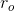
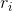
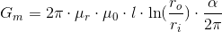
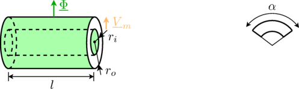
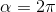

HollowCylinderRadialFluxHollow cylinder with radial flux; fixed shape; linear or non-linear material characteristics |
|
Information
This information is part of the Modelica Standard Library maintained by the Modelica Association.
The radial cylinder model is characterized by the outer diameter, , the inner diameter, , length,  , and the angle . The magnetic reluctance is determined by:
, and the angle . The magnetic reluctance is determined by:

In this model the magnetic flux and the magnetic potential difference, respectively, are radially oriented.

The above figure left shows a radial flux cylinder with . The figure on the right indicates the central angle  in case a cylinder section shall be considered.
in case a cylinder section shall be considered.
Parameters (5)
| mu_rConst |
Value: 1 Type: RelativePermeability Description: Constant relative permeability |
|---|---|
| l |
Value: 0.01 Type: Length (m) Description: Width (orthogonal to flux direction) |
| r_i |
Value: 0.01 Type: Radius (m) Description: Inner radius of hollow cylinder |
| r_o |
Value: 0.02 Type: Radius (m) Description: Outer radius of hollow cylinder |
| alpha |
Value: 2 * Modelica.Constants.pi Type: Angle (rad) Description: Central angle |
Connectors (2)
| port_p |
Type: PositiveMagneticPort Description: Positive quasi-static magnetic port |
|
|---|---|---|
| port_n |
Type: NegativeMagneticPort Description: Negative quasi-static magnetic port |
Components (4)
| V_m |
Type: ComplexMagneticPotentialDifference Description: Magnetic potential difference of both ports |
|
|---|---|---|
| Phi |
Type: ComplexMagneticFlux Description: Magnetic flux from port_p to port_n |
|
| B |
Type: ComplexMagneticFluxDensity Description: Magnetic flux density (normal component) |
|
| H |
Type: ComplexMagneticFieldStrength Description: Magnetic field strength (normal component) |
Used in Examples (1)
|
Modelica.Magnetic.QuasiStatic.FluxTubes.Examples.FixedShapes Magnetic circuit using different cylinder sections |